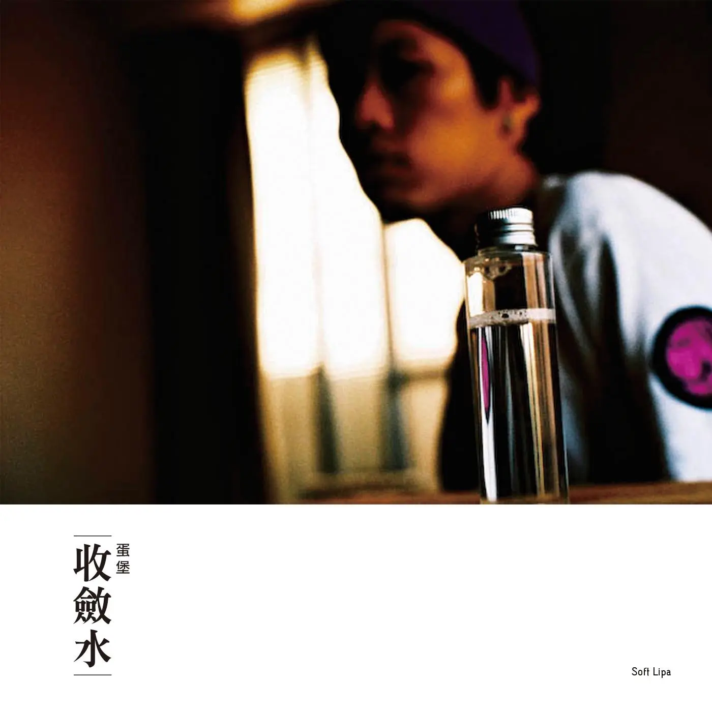

Album#47
收斂水
{kind=link}

专辑信息
- 专辑名称： 收斂水
- 歌手： 蛋堡 Solf Lipa
- 年份： 2009-07-22
- 时长： 約 52 分鐘

這張專輯是在 Verdant 的 Tracks#2：收斂水 發現的，聴了几遍了，是我喜歡的那類說唱。
蛋堡的聲音給我一種少年感，可能和臺灣口音有關，臺灣口音總會讓我想到一些青春偶像劇。在歌詞裡很少聴到「蛋堡」兩個字，更多的是他的英文名「Soft Lipa」，會聴到「軟嘴唇」、「SL」等字樣。
喜歡這張專輯的詞作，寫得都蠻有趣的。詞好還不够，還要唱得清晰，我不喜歡那些唱得飞快，聴不清在唱什麼的說唱。說唱也要有韻律感、有律動，這張專輯裡蛋堡都做得很好。
除了詞，我也喜歡這張專的編曲，它融合了一些爵士元素的，聴起來給我一種放鬆的感覺，會讓我想到 Nujabes 的 Luv(Sic)，有著近似的聴感 (不過旋律上還是 Nujabes 更厲害些)。「Hit The Rhyme」裡的鋼琴和長笛、「鄉愁」和「關於小熊」裡的薩克斯等都很好聴。
專輯裡我比較喜歡的几首(好難選誒！都挺好聴的)：Hit The Rhyme 、 鄉愁 、 關於小熊 、 給你一個吻 、 金賭蘭 、 熱水澡 、 收斂水 。
除了《收斂水》，我也聴了蛋堡的《Winter Sweet》和《月光》，也都不錯。如果你喜歡《收斂水》，想聴更多，就去聴聴他的其他專輯吧。
《收斂水》再版序
再版序 ———藉由蛋堡的收斂水重新發行，我必須寫下來這幾年來發生的事情，就像蛋堡的史詩那樣，試著寫給 2009 的蛋堡和迪拉胖1。
這時候你們應該還在通化街公園旁的二樓小房子裏，湖水綠的牆壁還光亮尚未斑駁，生產室裏紫色的地毯還乾燥鬆軟，水泥牆壁，和那對後來單體四分五裂的紫色監聽喇叭都還新的一樣。坐在電視前面大夥兒一齊等待電視節目後面，那短短六十秒的廣告，關於小熊的 MV 片段播放的時候，才覺得口袋裏真金白銀去買的第一支電視廣告真的藉由第四台的電纜傳到每一戶的電視裏，走到唱片行裡面看到華語獨立發行區裡面那張白的惹眼，我們和阿信花了好多晚上琢磨出來的專輯，那時候的玫瑰唱片行人還好多，不若現在死氣沈沈。
那年的秋天，蛋堡會忽然得提出想要在冬天再發一張迷你專輯，裡面大部分的歌都只是音樂，一開始你有點怕，覺得不到半年又發一張這樣小眾的專輯很冒險，後來聽了 DEMO 也改變了心意，這樣子老是衝動大過於算計的迪拉胖，到今天為止倒是沒有什麼變化，真正屌的東西總是可以讓你不計代價想完成它。當然你也不會想到，最後蛋堡是因為這張冬天發行的專輯才得以入圍了當年的金曲獎最佳新人。那時候你們正要準備第一場不一樣的表演，在紅樓的河岸留言，迪拉找來了以前一起玩過團的貝士手阿達，想替蛋堡打造一場爵士風味的演出，當時已經是老師輩的呂聖斐和小董老師都慨然允諾參加這個企劃，那時候從練團到演出都是那麼令人興奮，滿場伍佰個歌迷看得你們兩腳都軟了，迪拉胖也開始了他每次演出的尾聲都會上台好好做一番即興的脫口秀，聽說後來被稱為 “DELA TIME”，還有你們可能覺得我在唬爛，但是 2014 的我們已經在籌備小巨蛋的演唱會。
2014 的今天，你們已經攜手發行了五張專輯，而且第五張專輯蛋堡用了本名發片，是一張你們沒辦法想像的雙碟鉅作，然後『杜振熙』一口氣入圍了三項金曲獎，其中有你們當年聊過，饒舌歌手絕對不可能入圍的金曲歌王，但是一切已經不再遙不可及，幾年後你們會搬到一個新的落腳處，裡面有迪拉一直想要漂亮的廚房，錄音室，甚至迪拉的辦公室裡面已經擺滿了獎盃，包括一個黃澄澄金曲獎的獎座。還記得以前黃金年代那張 EP 裡面有首歌叫做十年嗎？ 2019 的迪拉胖和蛋堡，已經是接近四十的兩個中年大叔，而你們攜手打造的這個廠牌：顏社 會變成什麼樣子呢？希望我們都還像 2009 的時候一樣單純，在完成每一張新的專輯的時候滿足的想笑，在每一次演唱會完去牛老大吃慶功宴的時候，還是餓的像少年一樣。希望我們還都好喜歡 hip hop。
迪拉胖 — 2014.6.10 富錦街
TRACKLIST
關鍵字 (Intro)
在优美的鋼琴旋律中，先做個自我介紹。
Hit The Rhyme
[Intro]
Ah (Ah, ah, ah, ah)
Yeah, Soft Lipa, Uh-ha
哒哒啦哒哒哒啦哒
Yeah-eah
为各位带来这首 Hit The Rhyme (Hit The Rhyme)2
Uh, yeah!
[Verse 1]
在我開始押韻之前
我從節拍裡偷閒
撇開了輕鬆的旋律和舒服的聲線
我先聲明一點
不用艱深的字眼
文字一樣源源不絕彷彿天生活字典
這是我目標 我想要走的路 and
押韻能打開想像力的窗戶
可以談天說地像一群朋友睡在通舖
可以單刀直入 無拘束
用最通俗的講法表達豐富的想法
所有痛苦和快樂都讓你像親身經歷
我收服人心的方法 so cool
用旋律節拍征服
聽到這裡你 就這樣被我征服
It's old school 但人是念舊的動物
看 我是這樣烹煮我的 soul food
旋律大鼓和小鼓
And I hit the rhyme too
[Chorus]
I hit the rhyme
找出最簡單的方法
Hit the rhyme
似乎是最好的回答
Don't ask me why
怎麼說呢 怎麼說呢 總之我
Hit the rhyme
Like this……
[Verse 2]
你期待我給你什麼 為什麼
要怎麼 才能讓你快樂 而沒有負擔
於是我選擇 顯得像普通人一般
有料卻簡單 人人買得起的孔雀餅乾
我喜歡 認真而不要太嚴肅
偶爾主觀 但大家都接受的程度
不用講得太深 想像空間卻自然延伸
我講得太真 你嘆了嘆說"幹!真的!"
也許你說我普普通通
太軟的 flow 沒法讓人虎虎生風 但是
輕飄飄的才能升空
我靜悄悄地不消太嘮叨會讓你亂糟糟呢
我招了 從我腦海撈的 想法不特別
但 最重要是感覺
看 我是這樣押韻不斷
其他先不管
在我的 show time
Just hit the rhyme
[Chorus]
I hit the rhyme
找出最簡單的方法
Hit the rhyme
似乎是最好的回答
Don't ask me why
怎麼說呢 怎麼說呢 總之我
Hit the rhyme
Like this……
[Verse 3]
如果每首歌都是我的孩子
嗯…我想大部分是女孩子
像是鄰家女孩 是那樣可愛
有輕微近視 戴上眼鏡又變女教師
讓你不斷點頭稱是 但連紳士
也幻想是學生兼職
是的我堅持 獻上她們是我天職
誰能拋開偏執 就能先馳得點
她們比較溫柔也比較文靜
和我一樣熱愛自由 so 沒有門禁
隨便 你帶她 去哪裡 都可以
出現 在 CD 隨身聽 maybe TV
出現在你們想去的每個地方
出現在每個夜晚 陪你進入夢鄉 (night)
當她們陪我出現 請歡呼鼓掌
能得獎的押韻 讓我 keep it on
[Chorus]
I hit the rhyme
找出最簡單的方法
Hit the rhyme
似乎是最好的回答
Don't ask me why
怎麼說呢 怎麼說呢 總之我
Hit the rhyme
Like this……
I hit the rhyme
找出最簡單的方法
Hit the rhyme
似乎是最好的回答
Don't ask me why
怎麼說呢 怎麼說呢 總之我
Hit the rhyme
Like this……
好聴，蛋堡通過這首歌表達了他喜歡的 HipHop 是怎樣的，她「不用艱深的字眼」、「用最通俗的講法表達豐富的想法」、「用旋律節拍征服」、「找出最簡單的方法 / Hit the rhyme」，她像一個可愛的鄰家女孩一樣，溫柔也陪伴著你，讓人怎能不喜歡呢。
嘶! Bamboo Holla
[Intro]
「嘶」is called Bamboo Holla
For my brother from different mother
「這什麼道理 這舒服 也是可以」
Yeah This is how we talk
[Verse 1]
這首歌獻給小少年
Bamboo Gang 陳志 黃播 and 叮噹
每一個曾經 使用相同語法
或學我們說話並樂在其中的人
這樣的用法由我們研發
不是語言學家但發展新的可能
由我本人介紹這故事
就要回到高中那學校的生活
現在跟我來 School Life 是一切起源
認識那時甚至還沒千禧年
加入社團的意願想來值得紀念
瞬間像坐在播放回憶的戲院
一群人跳舞 一起聽著音樂
像 嚴正國 左孝虎 的特技跟著音樂
也像流行教主創造用語詞彙
想要打招乎的時候 just say
[Chorus]
「嘶」is called Bamboo Holla
For my brother from different mother
「這什麼道理 這舒服 也是可以」
Yeah This is how we talk
「嘶」is called Bamboo Holla
For my brother from different mother
「這什麼道理 這舒服 也是可以」
Yeah This is how we talk
[Verse 2]
當我們同意就說「can」或「也是可以」
如果不同意就說「這沒道理」
對方不同意 我回他「否定這樣」
沒那麼容易 還有其他就像
要形容很屌「這好」「這個舒服」
如果是很鳥或沒搞頭「結束了」
要知道你在幹嘛「勒寵那」
沒事做你就回答「摩聊ㄉ」
「來造」「掰ㄉ」就是再見
融合新的音律也讓古早風味再現
「種幾壘」是想要大便
「開槓幾壘」就是要找你聊天
再舉個例 想追的女生叫做「妙計」
用法規則很多但不需要記
因為我們總會聚在一起
在一起也不會忘記 見面第一句
[Chorus]
「嘶」is called Bamboo Holla
For my brother from different mother
「這什麼道理 這舒服 也是可以」
Yeah This is how we talk
「嘶」is called Bamboo Holla
For my brother from different mother
「這什麼道理 這舒服 也是可以」
Yeah This is how we talk
[Verse 3]
時間過去 在多年後的現在
科技的發展從來沒有懈怠
這世界溝通的方式不斷更新
越來越好 但真心越來越少
雖然我們顯得越來越老
但越早向青春借貸快樂越能輕鬆作保
現在坐好 這紀錄片錄記了回憶
沒有字幕 因為 友情不用翻譯
友情不用翻譯
不用翻譯 (for my homies)
大概是對過去某段友情的怀念，「友情不用翻譯」。
鄉愁
[Intro]
Uh, Soft Lipa 来自颜社3
这首歌献给所有想家的朋友
[Verse 1]
而對於每種背景離鄉的鄉愁
都大致相同
我將從你的回憶裡面找出其中一種
會讓你想哭的人不只講故事
也曾經照顧著你像是小護士
他看著網路的相簿 打開了窗戶
他吸吐 想 be cool 空氣裡散佈著
淡淡的哀愁 像老歌一首
緊接著他眉頭一皺 又往回憶走
那裡的家鄉 那景象
海邊的夕陽 學校的磚牆
讓人興奮的漆黑的停車場
老字號的想吃到的小吃
靠著排隊才買到的情景
牽手的情侶 開心地淋雨
而那先走的朋友成為異鄉的行旅
最後 上車前那車錢握在手裡
背著勉勵和期許 是卸不下的行李
[Chorus]
不斷地走 他不斷地找
印象中的路口 車不那麼吵
他離開的戶口 父母不斷地老
他不斷地走 他不斷地找
尋找令人懷念的飯菜
尋找令人平靜的狀態
他的路 等待超越的障礙
家的方向模糊了 放在心裡
[Verse 2]
當他來到 big city 來到這 big city
他背著太多期待 他不許失敗
除非成功否則回不去了
他知道自己不錯 他可以 不過
得先習慣這城市中的冷漠
得先習慣高樓大廈的輪廓
得先習慣空氣髒亂 and 氣候變換
習慣這瀰漫著糜爛的夜晚生活
看著他們 change J.O.B
買 I P.O.D 流行 O.R.Z 他呢
踏步在原地 像絕地武士運用原力
抓住發光的夢想在揮舞著
當他又邁開腳步 穿梭在高樓間的小路
或往返不同顏色的車廂
他看著他們走得匆忙甚至跑得倉皇
那步調不是他所嚮往
[Chorus]
不斷地走 他不斷地找
印象中的路口 車不那麼吵
他離開的戶口 父母不斷地老
他不斷地走 他不斷地找
尋找令人懷念的飯菜
尋找令人平靜的狀態
他的路 等待超越的障礙
家的方向模糊了 放在心裡
[Verse 3]
這裡很方便其實 每方面
衣食住行 and 育樂 絲毫不遜色
除了雲的顏色比較常是黑的
還有那些圈子比較多的 hater
習慣了咖啡的味道 早上才睡覺
新朋友的圍繞 新的生活
但他依舊喜歡古早味的香料
沒捲舌的腔調 他們笑他 叫他講繞口令
他想要 回到令他懷念的地方
他想要重溫那些人事物的出現
但他不知道 他將要或將會面對
熟悉或改變 儘管適應能力老練
那心情 那心情 沒法像是點水蜻蜓
他發現 那精靈 在每個人的心靈
都藏了一份沒改版的地圖
經過鹿港小鎮4 通往當年的幸福
[Chorus]
不斷地走 他不斷地找
印象中的路口 車不那麼吵
他離開的戶口 父母不斷地老
他不斷地走 他不斷地找
尋找令人懷念的飯菜
尋找令人平靜的狀態
他的路 等待超越的障礙
家的方向模糊了 放在心裡
不斷地走 他不斷地找
沒回家的藉口 聽來沒那麼好
他的心裡怒吼 音訊不斷地少
他不斷地走 他不斷地 不斷地
等待讓人溫暖的灌溉
抵抗讓人心寒的挫敗
他的路 等待超越的障礙
家的方向模糊了 忘在心裡…
前奏很有辯識度，我很喜歡的一首。對家鄉的思念，也許是空間上遙遠的家鄉，也許是時間上遙遠的家鄉。
關於思鄉，之前分享的專輯裡也有一些類似的歌：
關於小熊
[Verse 1]
他是 一隻絨毛玩偶他是綠色的
樣子 是北極熊應該是怕熱的
但是他是 那年春吶男孩帶著女孩
在熱鬧 的墾丁街用飛鏢射到的
他們合照了幾張 在星巴克
身上穿著鮮艷的 扶桑花色
那時 小熊的表情還有些生澀
從此 他們的生活都有他跟著
有他跟著的時候 他們大致都快樂
他睡女孩枕頭旁 男孩睡外側
他是 當他們吵架又合好的藥
他們拿他逗對方發自內心的笑
他看著他們打鬧 有時被丟來丟去
看過他們打砲 看過女孩抽搐
他有時夜晚禱告 能一直跟著他們沒有憂慮
不管哪裡都去
[Chorus]
關於小熊的事 也關於你關於我
關於留關於走 關於喜歡與否
關於小熊的事 也關於你關於我
關於留關於走 關於喜歡與否
[Verse 2]
Uh 他不知道人會變 不知道
男孩女孩之間為什麼沉默 他不知道
為什麼枕頭會溼掉 為什麼施暴
分開是遲早 但他不知道
是哪裡出了問題 改變他們
他以為他可以 他想問得得體
想懂一些哲理 但沒來得及
就被 放進鞋盒裡
在那裡面有他們寫的信
他們的相片 電影的票根
之類的紀念 男孩 曾帶她去旅行
帶給女孩的禮物 也問過他的意見
他們的信每一字一句都甜
提到每段心情還有 常去的公園
看累了 小熊打了呵欠
沉睡在那小空間 那是個冬天
[Chorus]
關於小熊的故事 也關於你關於我
關於留 關於走 關於喜歡與否
關於小熊的事 也關於你關於我
關於留關於走 關於喜歡與否
[Post-Chorus]
當畫面停在 old days 抱在一起 男孩回答 Always5
當畫面停在 old days 抱在一起 男孩回答 Always
[Verse 3]
小熊沒再醒來
沒再 被提起過 沒再 等到男孩陪著他們一起過
隨著太陽 起落了許多次
直到女孩自己 做了許多事
直到女孩成為女人 經歷更長的旅程
更溫柔的眼神 那鞋盒 偶爾又被打開
往事不斷蒙太奇 小熊卻仍舊靜止在那裡
他早被哭髒了 他從沒洗過澡
墾丁的熱鬧 從沒再看到
從沒 跟著他們一起去遠方
他的填充物是遺憾 笑臉是假裝
但他代表那一段 他是那證明
他的故事只到一半 愛情還盛行
在這世界上 儘管情書上的愛 只剩字面上
卻是他不變的願望
[Chorus]
關於小熊的事 也關於你關於我
關於留關於走 關於喜歡與否
關於小熊的事 也關於你關於我
關於留關於走 關於喜歡與否
關於小熊的事 也關於你關於我
關於留關於走 關於喜歡與否
關於小熊的事 也關於你關於我
關於留關於走 關於喜歡與否
[Post-Chorus]
當畫面停在 old days 抱在一起 男孩回答 Always
當畫面停在 old days 抱在一起 男孩回答 Always
從一隻玩偶小熊的視角，講了一段遺憾的愛情 (類似 花束般的戀愛 的那種) ，聴了讓我有些難過，既因為這對情侣，也因為小熊。小熊看著曾經幸福快樂的主人關係逐漸破裂，但他什麼也說不出口，什麼也做不了，我想他應該也很難過。
☞ MV
給你一個吻
給我一個吻可以不可以 (請你放尊重點)
飛吻也沒關係 (ㄟ!我可是正人君子啊!)
給我一個…給我!給我一個…給…給我!
給我一個…給我…給我…給我 (發浪了!!)
給我一個…給我! 給我一個…給…給我!
給我一個…給我…給我…給我 (發浪了!!)
給我一個吻~可以不可以 (好啦!給你給你)
飛吻也沒關係 我一樣心感激 (好啦!給你給你)
給我一個吻~敷衍也可以 (好啦!給你給你)
飛吻表示甜蜜 我一樣感謝你 (PARTY TIME!)
你眼睛 你不答應 (請你注意我是軟嘴唇6)
我也要向你請求決不灰心 (親一個就要傳緋聞 muah)
你嘴唇 你沒回音 (請你注意我是軟嘴唇)
我也要向你懇求決不傷心 (親一個就要傳緋聞 muah)
你眼睛 你不答應 (請你注意我是軟嘴唇)
我也要向你請求決不灰心 (親一個就要傳緋聞 muah)
你嘴唇 你沒回音 (請你注意我是軟嘴唇)
我也要向你懇求決不傷心 (親一個就要傳緋聞 muah)
采樣了「給我一個吻」(應讓是張露的版本，原曲我就很喜歡)，蛋堡把它做成了對話，歌裡唱到「給我一個吻」，他就唱「給你給你」，很好玩。
遇見
[Intro]
Uh, That's right
[Verse 1]
氣氛特別好的今夜 遇見好的音樂
微醺的人 散發好多的親切
期待好的經驗 那我該怎麼做
我先嚼個青箭 如果會遇見 pretty girls
我會遇見誰 在這個 crazy world
如果有誰也這麼想 那誰會遇見我
也許是舊情人 也或許老朋友
也或許生面孔 也或許只是走過去
上次那個 想遇到第二次
不只是有點 甚至沒法去克制
如果她冷淡 會不會是測試
會不會我們根本還不算認識
這裡不辦正事 在這個空間
來這不只為了 跳舞喝酒抽煙
有時處在放鬆和放蕩的中間
有時 為了和誰遇見
[Chorus]
在哪裡遇見 在哪裡遇見
在哪裡遇見
(每一次 當我一轉頭)
在哪裡遇見 在哪裡遇見
在哪裡遇見 在哪裡遇見
ㄟ? 怎麼那麼巧!
在哪裡遇見 在哪裡遇見
在哪裡遇見
(每一次 當我一轉頭)
在哪裡遇見 在哪裡遇見
在哪裡遇見 在哪裡遇見
ㄟ? 怎麼那麼巧!
[Verse 2]
什麼地方 期待遇見什麼事
一個眼神交會 還是她臉上的痣
一次交談機會 來自心裡的衝動
在最合適的時段 排斥討人厭的事
過了時的說法或許比較老套
說著 茫茫人海之中我們找到
或者 打從一見面就開始搞笑
或者 抓住感覺或者讓它跑掉
也或者 遇到好多次才開始打招呼
習慣了 對緣份我們太高估
不同的人物時間地點
不經意的碰面 有時無法避免
不辦正事 在這個空間
早起不是為了太陽出現東邊
有時處在放假和放逐的中間
有時 為了和誰遇見 遇見
[Chorus]
在哪裡遇見 在哪裡遇見
在哪裡遇見
(每一次 當我一轉頭)
在哪裡遇見 在哪裡遇見
在哪裡遇見 在哪裡遇見
ㄟ? 怎麼那麼巧!
在哪裡遇見 在哪裡遇見
在哪裡遇見
(每一次 當我一轉頭)
在哪裡遇見 在哪裡遇見
在哪裡遇見 在哪裡遇見
ㄟ? 怎麼那麼巧!
[Verse 3]
如果巧合需要時間來蓄電
多久之後誰跟誰才會又遇見
當我在走 路上誰跟我擦肩
當我坐下 座位誰在我對面
這個城市 怎麼樣都不意外
如果我是主角 能在轉角遇到愛
遇到一切都是命運介紹
那不會有預兆 那不會有句號
在哪裡遇見 凌晨五點的涼麵
在哪裡遇見 放著爵士樂的咖啡店
在哪裡遇見 擁擠的藍線
在哪裡遇見 人來人往的路邊
在哪裡遇見 遇見故事的入口
在哪裡遇見 遇見靈感的助手
在哪裡遇見 我們是過客 是暫留
在城市中漫遊 在這都會中漂流
[Chorus]
在哪裡遇見 在哪裡遇見
在哪裡遇見
(每一次 當我一轉頭)
在哪裡遇見 在哪裡遇見
在哪裡遇見 在哪裡遇見
ㄟ? 怎麼那麼巧!
在哪裡遇見 在哪裡遇見
在哪裡遇見
(每一次 當我一轉頭)
在哪裡遇見 在哪裡遇見
在哪裡遇見 在哪裡遇見
ㄟ? 怎麼那麼巧!
在哪裡遇見……
貝斯、薩克斯、合成器組成的編曲蠻好聴。
每天在人來人往的人潮中穿梭，也遇見了很多人，只是大多都沒什麼交匯。想起一句 重慶森林 裡的臺詞 ⸺ 「每天你都有机会和很多人擦身而过，而你或者对他们一无所知，不过也许有一天他会变成你的朋友或是知己，我是一个警察，我的名字叫何志武，编号 223」、「我们最接近的时候，我跟她之间的距离只有 0.01 公分，57 个小时之后，我爱上了这个女人。」
Start It Underground
[Verse 1]
他們是學生 不停地學習
孩子的成長要經過很多個學期
不分年紀 不分能力
每個科目都沒有捷徑
他們要算數學 數拍子數著一個兩個八
讀中文了解起承轉合 學譬喻法
念歷史 讓他們認識 2Pac 和 Biggie
看地理 帶他們走訪東西南岸
從英文中正確學習「Yo!check it out!」
上電腦 怎麼錄音 什麼軟體最好
練好書法 拿別人帖子臨摹寫詞
體育 要練好肺活量還要穿全白鞋子
漸漸地他們摸透寫作的訣竅
現在他們畢業於押韻的學校
學費絕對沒有白費 自信以足夠
對別人的 Flow 他們不再學
韻腳不再瘸 不再覺得自己屌卻爛而不自覺
不是學生之後 他們路途是截然不同
重複同樣的夢沒管紅不紅
[Chorus]
Start It Underground！
不只 Hot Shit 冷盤也做
Start It Underground！
不斷進步從不得過且過
Start It Underground！
得要面對很多起落
Start It Underground！
我們 Start It Underground 我們
Start It Underground！
不代表我們陰暗
Start It Underground！
不代表我們清算
Start It Underground！
代表著向下紮根再向上發展 正統性不容侵犯
[Verse 2]
他們的工作通常不高薪，而執著的程度常讓父母操心
有人試過自己開店賣舶來品，但連識貨的都在等待降價出清
有烹煮靈魂卻不得志的廚師；有不合適的 Gangsta 想讓人變成浮屍
有人想震撼夜店失敗了數次，前途看似充滿失敗的故事
時間好快他們老邁，像被歲月倒債，對走來的路已經分不清好壞
他們早在幾年前就有過類似焦躁：有時會懷疑有些部分老師沒有教到
儘管如此，他們一樣有著賽亞人的驕傲；他們交到的朋友還是一起笑鬧
留了鬍子，夢想卻沒被阻止，一樣 Shout out for hip-hop，靈魂沒被現實處死
[Chorus]
Start It Underground！
不只 Hot Shit 冷盤也做
Start It Underground！
不斷進步從不得過且過
Start It Underground！
得要面對很多起落
Start It Underground！
我們 Start It Underground 我們
Start It Underground！
不代表我們陰暗
Start It Underground！
不代表我們清算
Start It Underground！
代表著向下紮根再向上發展 正統性不容侵犯
[Bridge]
總是有想法在腦中醞釀
只要有時間 創作總是盡量
有時在唱片行找到他們行蹤
想法天馬行空 這是他們給人的印象
當他們回想這過去的自己
那過去的事也或許唾棄了自己
有時沒法放手 讓過去都過去了
跟現在沒默契了的是過氣的自己
那時 他們的名聲靠著自己建立
他們的成長靠著朋友建議
不管他們的偶像會是 Common 或 Warren G
他們開墾著熱也沒有開冷氣
[Chorus]
Start It Underground
現在他們依舊是
Start It Underground
聽在耳裡他就刺
Start It Underground
他們還是居陋室，他們還是驕傲於－
Start It Underground
你問有什麼不同呢
Start It Underground
你問為什麼不紅呢
於是出名的 不能再一意孤行了
太聰明的 反而被阻止通行了
Start It Underground！
不只 Hot Shit 冷盤也做
Start It Underground！
不斷進步從不得過且過
Start It Underground！
得要面對很多起落
Start It Underground！
我們 Start It Underground 我們
Start It Underground！
不代表我們陰暗
Start It Underground！
不代表我們清算
Start It Underground！
代表著向下紮根再向上發展 正統性不容侵犯
這首應該是關於說唱歌手的，成為厲害的說唱歌手要學習很多，打好基本功，「Start It Underground」，「向下紮根再向上發展」。
金賭蘭
[Verse 1]
我討厭每次才睡覺 又起床尿尿
討厭被吵醒了臉上還要笑笑
我討厭漢堡沒有美式的配料
討厭在脹氣時候 找不到胃藥
我討厭老師說你們兩個對調
我討厭同學拿鞋子來跟我炫耀
我新買的衣服沾到油漬都洗不掉
我粉刺都擠不掉 用什麼都沒效
討厭吃飯時候有人跟我分
還有東西在嘴裡嚼 就對我噴
討厭那種明明不懂的還愛跟我爭
討厭室友一直在那邊 登登登 登登登
我討厭下雨天 我討厭淋溼
我討厭故意的感覺 我討厭形式
討厭 有好多討厭的事都說不完
討厭每次一想到這些事 挖丟賭蘭
[Chorus]
我金賭蘭 我金賭蘭
我金賭蘭 我真正蓋賭蘭
我金賭蘭 我金賭蘭
我金賭蘭 我真正蓋賭蘭
[Verse 2]
討厭電話打來響一聲就給我掛掉
討厭轉寄信說我不轉寄就會掛掉
討厭打球遇到 那種硬要跟你講規則
討厭每次騎車都要閃 靠站的公車
討厭計程車司機跟我聊政治
討厭想要一個人的時候遇到認識
有的小孩叫得超大聲 大人也不管
看電影的時候總是有人手機不關
我討厭碎碎念 我討厭計畫
我討厭每次吵架都要說分手的氣話
我討厭每看一篇網誌就要關一次音樂
討厭每次換季就被感冒病毒侵略
討厭累了一天 洗澡卻沒有熱水
看著變粗的小腿 討厭身材改變
討厭 有好多討厭的事都說不完
討厭每次一想到這些事 挖丟賭蘭
[Chorus]
我金賭蘭 我金賭蘭
我金賭蘭 我真正蓋賭蘭
我金賭蘭 我金賭蘭
我金賭蘭 我真正蓋賭蘭
[Verse 3]
真討厭 得跟討厭的人見面
我更討厭 在他們面前不能擺臭臉
最討厭人家喜歡做我討厭的事
但就算喜歡的人還是會做討厭的事
我又不喜歡人家討厭我 喜歡人家喜歡我
所以搞到最後我最討厭我
討厭的事情那麼多 每件事都考驗我
我該怎麼做 我該怎麼做
生活不好混 我討厭這些矛盾
睡得很飽上班時間還是覺得好睏
而我該怎麼辦 我該怎麼辦
不知道怎麼辦 不知道該怎麼辦
挖丟金賭蘭 我金賭蘭
挖丟金賭蘭 金賭蘭
挖丟金賭蘭 金賭蘭
挖丟金賭蘭 你娘勒金賭蘭
(在這裡奉劝各位，千萬不要做我討厭的事情，要不然，我賭蘭)
[Chorus]
我金賭蘭 我金賭蘭
我金賭蘭 我真正蓋賭蘭
我金賭蘭 我金賭蘭
我金賭蘭 我真正蓋賭蘭
[Outro]
我還是喜歡這樣 慵懶
我還是喜歡這樣 鬆散
我還是喜歡這樣 空轉
我還是喜歡這樣 慵懶
我還是喜歡這樣 鬆散
我還是喜歡這樣 空轉
我還是喜歡這樣 慵懶
我還是喜歡這樣 鬆散
我還是喜歡這樣 空轉
如果你有很多討厭的事，這首就是你的嘴替。
「金賭蘭」表達了一種非常不爽、極度厭煩、氣憤的心情。
「金」是副詞，相當於「很、非常、真正」；「賭蘭」的本字是「揬𡳞」，「揬」是戳、刺的意思，「𡳞」指陰莖或陰囊，字面意思就是「陰莖或陰囊被戳被刺」。而這個動作勢必引起極度不適，所以「揬𡳞」用來形容心情極度氣憤與不爽。7
如果你還需要一首發泄不爽的歌，可以聴聴陶喆的 王八蛋 。
煙霧瀰漫 - 軟嘴唇 Remix
[Chorus]
煙霧瀰漫 我們開始 fun
有抽就有抽 從來沒有煙霧淡
押韻不斷 讓你不斷拍案著說"喔幹!"
你會胡亂的迷幻著習慣了
煙霧瀰漫 我們開始 fun
有抽就有抽 從來沒有煙霧淡
押韻不斷 讓你不斷拍案著說"喔幹!"
你會胡亂的迷幻著習慣了期待著…
[Verse 1]
好像有點不對 everybody knows
但這種感覺你不想 let it go
儘管你不知道要向誰或怎麼 order
或桌上那張紙要怎麼 roll 呢
阿~那是最棒的香味
那是好事或壞事只是相對比較
規則裡禁止的將會
讓喜歡邪惡的人絕對想要
這罪狀不及 red rum
試著解釋只是為了解放
就像那魔鬼在你身邊演唱的
More than drunk
也有多一點的 vapors
所以我們為了 燃燒準備 lighter
以免不抽煙的 也終於都想開了
那些最普通的人都不再乖了
說 bye bye 跟媽咪說 bye bye…
[Chorus]
煙霧瀰漫 我們開始 fun
有抽就有抽 從來沒有煙霧淡
押韻不斷 讓你不斷拍案著說"喔幹!"
你會胡亂的迷幻著習慣了
煙霧瀰漫 我們開始 fun
有抽就有抽 從來沒有煙霧淡
押韻不斷 讓你不斷拍案著說"喔幹!"
你會胡亂的迷幻著習慣了期待著…
[Verse 2]
Wanna chill 你說你 wanna chill
太多人太多壓力你 wanna kill
拜託又拜託我 tell you how I feel
說請你救救我 請你請你救救我
就我所知 那像腦中所思考的
所有瑣事 都變的有趣
喝水像喝果汁 東西變得好吃
說了十句話裡廢話有九句
每一秒你從下一秒裡醒來
要說時間多慢都可以
然後再次沉入那流裡
不斷前進 在滾動的球裡
[Bridge]
煙霧瀰漫 我們開始 fun
有抽就有抽 從來沒有煙霧淡
押韻不斷 讓你不斷拍案著說"喔幹!"
你會胡亂的迷幻著習慣了…
[Chorus]
煙霧瀰漫 我們開始 fun
有抽就有抽 從來沒有煙霧淡
押韻不斷 讓你不斷拍案著說"喔幹!"
你會胡亂的迷幻著習慣了
煙霧瀰漫 我們開始 fun
有抽就有抽 從來沒有煙霧淡
押韻不斷 讓你不斷拍案著說"喔幹!"
你會胡亂的迷幻著習慣了期待著…
[Verse 3]
大家都亂鬧 新聞都亂報
豪宅被ㄘㄨㄥˋ康 委屈中恆庹宗康
從節目中被 strike out
從這社會外貌
你猜不出這 right now
在台灣 多少人正點燃
抓包了沒有誰敢一人承擔
所有壓力最後留給藝人承擔
多少人嚇得尿濕床單 全台灣
看著新聞 多少人正點燃…
[Chorus]
煙霧瀰漫 我們開始 fun
有抽就有抽 從來沒有煙霧淡
押韻不斷 讓你不斷拍案著說"喔幹!"
你會胡亂的迷幻著習慣了
煙霧瀰漫 我們開始 fun
有抽就有抽 從來沒有煙霧淡
押韻不斷 讓你不斷拍案著說"喔幹!"
你會胡亂的迷幻著習慣了期待著…
似乎是在諷刺抽大麻 (或某種毒品) 的人。
這首 Remix 聴起來比較輕鬆，最後 Bonus Track 裡的版本則更有一種抽嗨了的迷幻感。
☞ MV
熱水澡
[verse 1]
如果你問我 洗澡用冷水還熱水好
不用考慮 當然是熱水澡
關進浴室被霧氣圍繞
辛苦了一天 給自己點回報
開始的幾分鐘先不抹肥皂
就這樣一直沖
能享受是最好 才能舒服睡飽
管他遲到至少 開心比較不會老
我沒法忍受水忽冷忽熱
熱水器…哪個牌子最出色
有這樣的論壇我馬上去註冊
找最好的品牌成為忠實的顧客
沒法用目測水溫是幾度
用皮膚享受溫暖的感觸
水煙霧 瀰漫 in the air
水費比別人貴 I just don’t care!
[verse 2]
泡進浴缸 好像時間都暫停了
水是黃的 加了巴斯克林了
小鴨子也是黃的 在那裡浮著
我思想也是黃的 想些色情的
畫面裡 泡泡在天上飛
裸體的男女在地上追 眼睛閉上
推演著把她推倒想到睡著
醒來是隔天清早
洗澡是一天的精神寄託
分析師說這絕對是利多
連蓬頭吐出靈感給我
把所有的煩惱吸進排水孔
每次衣服一脫 剩鳥毛一撮
聽著水聲看著那漩渦
只管唱我的歌吹我的口哨
神奇的功效 爽死我都要！
(媽！沒有熱水啦！！！我在洗澡，不要用水啦！)8
[chorus]
左邊是熱水 右邊是冷
冷天的時候 熱水要等
等待的時間 暫時要忍
忍耐著低溫 忍耐著冷
爸媽帶小孩或情侶一起
背有人洗或是靠自己
不管怎樣都好 從頭到腳
我們都期待一場熱水澡
[chorus]
左邊是熱水 右邊是冷
冷天的時候 熱水要等
等待的時間 暫時要忍
忍耐著低溫 忍耐著冷
檀香的肥皂或美體小舖
脫的是四角或三角褲
不管怎樣都好 從頭到腳
我們都期待一場熱水澡
辛苦了一天，你會不會也期待一埸可以放鬆的熱水澡？
冷天的時候 熱水要等
等待的時間 暫時要忍
忍耐著低溫 忍耐著冷
冬天時真是深有體會，不過装個浴霸就能解决了。
收斂水
[Intro]
收斂太多吵鬧的節拍
收斂太過油膩的題材
它是甜點或當作前菜
放在難得清爽的年代
一首歌的時間讓你收斂
流失的單純慢慢充電
鬆懈緊繃的精神方面
Pure Hip-Hop 透著漂亮的光線
[Chorus]
需要放鬆 Play this song9
去完夜店 Play this song
洗完澡後10 Play this song
悠閒的下午也 Play this song
[Verse 1]
我們身處在吵雜的環境裡
小聲說話沒有人會回應你
對照回憶起
現在已經不比過去 輕鬆隨意
拿歌曲來舉例
太多兇悍的攤販
佔據耳道卻沒有人取締
你除了需要保養的乳液
我好想推薦你靈魂的收斂水
用我採集的旋律來調配
它把煩悶給銷毀
清潔 保水 鎮定 舒緩
不含酒精也和化學無關
原料用的簡單
香味是天然的恬淡 你會喜歡
裝在透明噴砂的玻璃罐
細看這牌子寫著 Soft Lipa
[Chorus]
需要放鬆 Play this song
去完夜店 Play this song
洗完澡後 Play this song
悠閒的下午也 Play this song
[Verse 2]
我喜歡留白
簡單的力量讓人對你的尊敬像是挪抬
我從來不愛華麗的編曲
我拉開音符節拍的間距 填了文字進去
用我獨特的韻律 製造輕鬆是我的興趣
一字一句慢慢的粹取
一點一滴慢慢的過濾
偶爾你會想要濃妝艷抹
但想回到單純 這是唯一的線索
多麽乾淨 多麼好懂
它讓你安定 也縮小你的毛孔
輕拍 就清爽是應該
內行人都信賴這品牌
對 這感覺就是 Soft Lipa
[Chorus]
需要放鬆 Play this song
去完夜店 Play this song
洗完澡後 Play this song
悠閒的下午也 Play this song
[Outro]
收斂太多吵鬧的節拍
收斂太過油膩的題材
它是甜點或當作前菜
放在難得清爽的年代
一首歌的時間讓你收斂
流失的單純慢慢充電
鬆懈緊繃的精神方面
Pure Hip-Hop 透著漂亮的光線
什麼是收斂水？
我好想推薦你靈魂的收斂水
用我採集的旋律來調配
它把煩悶給銷毀
我想這張專輯做到了，我聴著挺開心的。
心情不好時，打開一首，跟著節拍去散散步或跑步 (每个人都有失恋的时候，而每一次我失恋，我都会去跑步，因为跑步可以将你身体里的水分蒸发掉，而让我不那么容易流泪，我怎么可以流泪呢？)，我想心情會好一些的。
SL Beat-137 (Outro)
Outro 也好聴。
脚注:
迪拉胖(本名張逸聖)是顏社企業(一家嘻哈獨立唱片廠牌)的創立人。
想到了 Fishmans 的 WALKING IN THE RHYTHM 。
大概是致敬了羅大佑的《鹿港小鎮》，也是一首關於家鄉的經曲歌曲。
假如你先生回到鹿港小鎮
請問你是否告訴我的爹娘
臺北不是我想像的黃金天堂
都市裡沒有當初我的夢想
在夢裡我再度回到鹿港小鎮
廟裡膜拜的人們依然虔誠
歲月掩不住爹娘淳樸的笑容
夢中的姑娘依然長髮盈空
臺北不是我的家
我的家鄉沒有霓虹燈
鹿港的街道 鹿港的漁村
媽祖廟裡燒香的人們
臺北不是我的家
我的家鄉沒有霓虹燈
鹿港的清晨 鹿港的黃昏
徘徊在文明裡的人們
再度我唱起這首歌
我的歌中和有風雨聲
歸不到的家園 鹿港的小鎮
當年離家的年輕人
你曾經對我說 你永遠愛著我
愛情這東西我明白 但永遠是什麼
戀曲 1980 by 羅大佑
既指嘴唇，也指蛋堡 (Soft Lipa)。
我聴著像是 play with music
這首曲子正是在「熱水澡」這首之後。